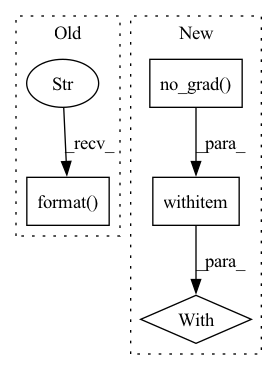

Pattern ID :11652
Before Change
print(full_dataset)
print("counts: {} ".format(full_dataset.count("ground_truth.keypoints.points")))
print("metadata: {} ".format(full_dataset.compute_metadata()))
print("first: {} ".format( full_dataset.first()) )
session = fo.launch_app(full_dataset, remote=True)
session.wait()
returnAfter Change
)
img = datamod.dataset.__getitem__(idx)[0].unsqueeze(0)
img_BHWC = img.permute(0, 2, 3, 1) // Needs to be BHWC format
with torch .no_grad():
for name, model in best_models.items():
pred = model.forward(img)
if isinstance(model, HeatmapTracker) or issubclass(
type(model), HeatmapTrackerIn pattern: SUPERPATTERN
Frequency: 3
Non-data size: 4
Instances Fragment ID: 39480874
Project Name: danbider/lightning-pose
Commit Name: 5b2a23b0d8921e13b53f893389ebee52f13869d6
Time: 2021-10-26
Author:
File Name: pose_est_nets/utils/fiftyone_plotting_utils.py
M Class Name: AnonimousClass
N Class Name: AnonimousClass
M Method Name: make_dataset_and_evaluate(3)
N Method Name: make_dataset_and_evaluate(3)
M Parent Class:
N Parent Class:
M File Name: pose_est_nets/utils/fiftyone_plotting_utils.py
N File Name: pose_est_nets/utils/fiftyone_plotting_utils.py
M Start Line: 37
M End Line: 97
N Start Line: 41
N End Line: 106
Before Change
full_dataset.add_samples(samples)
print(full_dataset)
print("counts: {} ".format(full_dataset.count("ground_truth.keypoints.points")))
print("metadata: {} ".format( full_dataset.compute_metadata()) )
print("first: {} ".format(full_dataset.first()))
session = fo.launch_app(full_dataset, remote=True)
session.wait()After Change
)
img = datamod.dataset.__getitem__(idx)[0].unsqueeze(0)
img_BHWC = img.permute(0, 2, 3, 1) // Needs to be BHWC format
with torch .no_grad():
for name, model in best_models.items():
pred = model.forward(img)
if isinstance(model, HeatmapTracker) or issubclass(
type(model), HeatmapTracker Fragment ID: 39480875
Project Name: danbider/lightning-pose
Commit Name: 9cf0f442f2e4320e4a68da5efa108659dba4473d
Time: 2021-10-26
Author:
File Name: pose_est_nets/utils/fiftyone_plotting_utils.py
M Class Name: AnonimousClass
N Class Name: AnonimousClass
M Method Name: make_dataset_and_evaluate(3)
N Method Name: make_dataset_and_evaluate(3)
M Parent Class:
N Parent Class:
M File Name: pose_est_nets/utils/fiftyone_plotting_utils.py
N File Name: pose_est_nets/utils/fiftyone_plotting_utils.py
M Start Line: 37
M End Line: 97
N Start Line: 41
N End Line: 106
Before Change
self.latent_op_alpha, self.latent_op_beta, False, self.second_device)
fake_images = generator(self.fixed_noise, self.fixed_fake_labels).detach().cpu()
plot_generated_samples_path = join("figures", self.run_name, "[{}]generated_samples.png".format( step) )
plot_img_canvas(fake_images, plot_generated_samples_path, self.logger)
self.writer.add_images("Generated samples", (fake_images+1)/2, step)
After Change
////////////////////////////////////////////////////////////////////////////////////////////////////////////////////////////////////////////////////////////////////////////////////////////////////////////////////////////////////////////////////////////////
def evaluation(self, step):
with torch .no_grad():
self.logger.info("Start Evaluation ({step} Step): {run_name}".format(step=step, run_name=self.run_name))
is_best = False
self.dis_model.eval() Fragment ID: 39480876
Project Name: postech-cvlab/pytorch-studiogan
Commit Name: 377ddfbcde84e74b93720eff17aea1877117b623
Time: 2020-07-20
Author: first287@naver.com
File Name: trainer.py
M Class Name: Trainer
N Class Name: Trainer
M Method Name: evaluation(2)
N Method Name: evaluation(2)
M Parent Class:
N Parent Class:
M File Name: trainer.py
N File Name: trainer.py
M Start Line: 489
M End Line: 542
N Start Line: 493
N End Line: 543